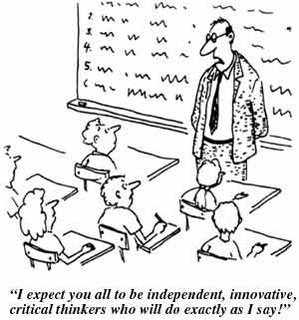

Newspapers and magazines often show you headlines of the greatest scientific discoveries ever made. But how much of that is true? In a recent conversation with a doctor, he told me how they review certain articles from popular medical journals on mistakes made in the process. They then compare them to the headlines, which often lead to astounding insights in wrong methodology or overly optimistic conclusions. Oftentimes the conclusions shown in media headlines are taking the most positive outcome possible and displaying just that to the world.
What happens even more often is that these headlines are copied and repeated ad nauseum. You may actually believe them, because there are only a few places that show the whole truth. And those often require a better understanding of the subjects at hand. You’re then left to wonder whether things are really too good to be true, which they unfortunately are not most of the time. It’s probably just another incorrect statement.
Luckily, fact checking became easier to do and unfortunately even more necessary. How does critical thinking help us in that?
What is critical thinking?
The first thing to do before discussing the subject is to analyse what critical thinking entails, because without this definition it would be a hard topic to discuss.
What I did at first was go online and do a quick search on critical thinking, which eventually yielded a definition on which all definitions I could find (there are 9 alone on Wikipedia seem to agree. One that’s clear in what it wants to say. Critical thinking is “disciplined thinking that is clear, rational, open-minded, and informed by evidence."

This definition isn’t narrowed down enough, as all logical thinking would be critical according to it. It needs some more spice, something to differentiate logical thinking from critical thinking. In academics, the focal point of this post, I would say I see critical thinking as the manner of thinking further than the lesson being thought, rather than thinking only on the lines presented.
Let me explain a bit further. When shown a theory that’s based on a certain logic, why not think about the logic instead of blindly assuming it’s right?
Often there are assumptions behind a theory and, whilst not immediately presented, there are almost always arguments against it. However logical the whole theory may sound at first.
Thinking of such arguments and accepting or rejecting the theory after posing those possible objections is what makes the process of critical thought. So why do we practice it so little? Why do we often just agree with what we’re told?
The challenges of critical thinking
The biggest reasons to neglect critical thinking are that
- Finding acceptance in your own world views is comfortable. Challenging theories and thoughts costs a lot of energy and may be uncomfortable.
- It can be hard to challenge what you see as an authority. Maybe it’s a teacher, a scholar or the government uttering the statements. They know what they’re talking about. And you feel that asking questions is just making you look stupid.
Both reasons can be seen as a fair argument and I won’t criticise those who won’t go further than this. Personally, I do not like to leave it at that. The first point is conceptually the easiest to take on. You need to challenge your own world views as well. Critical thinking means becoming a critical thinker.
“To find yourself, think for yourself.”
— Socrates
Challenging existing thoughts leads to a greater understanding of things, although you need to ask the right questions. One of the largest disciplines we know of has been built upon the premise of thinking critically and asking questions: philosophy. And one of the most famous philosophers was known for doing just that. It’s Socrates, our favourite old Greek.
And take a look around. There are plenty of examples of people who challenged the thoughts of the general populace and decided to live differently. It has brought us great things: women’s voting rights, equality, gay marriage. And that’s talking on a societal level, not on a scientific one. That’s the applied power of critical thought.
The second reason is tougher to take on. It can be hard to speak up to an authority figure, someone whose authority you respect. In my experience, those who have more expertise are often more than happy and often very enthusiastic to elaborate on a subject. They would gladly discuss the pros and cons of an idea. And when you learn from them, you deepen your understanding of those subjects and know what else is out there. This is of course easier said than done, but it can get you further than just blindly accepting the ideas that are presented.
The importance of critical thought
In academics and later on in life critical thinking is something which is deemed important. For example, the research cited in this article visualises that critical thinking gets posted most often on job listings. It’s one of those skills that can be interpreted in a lot of ways. What can we say about the importance of critical thought with our definition? Why do people value the skill so much?
There are several reasons why critical thinking is so important. I will pick two out of six to elaborate on, as the other four are either quite self-evident – yes I know that’s a bad thing to state in an article on critical thought – or too vague.
The four we’re not focusing on are all based in logical thinking alone, but that doesn’t make it critical. These four are understand logical connections, construct and evaluate arguments, detect mistakes in reasoning and solve problems systematically. The two I want to highlight are:
Critical thinking promotes creativity. To come up with a creative solution to a problem involves not just having new ideas. It must also be the case that the new ideas being generated are useful and relevant to the task at hand. Critical thinking plays a crucial role in evaluating new ideas, selecting the best ones and modifying them if necessary.
Critical thinking is crucial for self-reflection. In order to live a meaningful life and to structure our lives accordingly, we need to justify and reflect on our values and decisions. Critical thinking provides the tools for this process of self-evaluation.
The purpose of critical thinking boils down to these two. It’s necessary to evaluate ideas and statements and see what they’re worth. It helps you think creatively and think of other possibilities; it might even help you to see other people’s point of view. This continues in self-reflection, where critical thinking helps evaluate your own ideas and helps you be more open-minded, even though you might not change your views.
I’d say critical thinking is a great skill to have and keep practising, although it’s not always easy to do. It’s important to keep your eyes on what’s being shown to you and, when in doubt, to start asking questions.
But that’s enough from me. What do you think of critical thinking? Am I right here, or do you think differently?

Comments
Enabling comments requires your consent for Disqus to place cookies. You can review their privacy policy here.